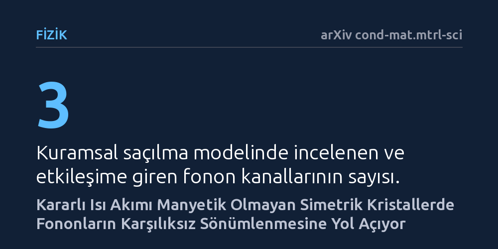

FIZIK · arXiv cond-mat.mtrl-sci · 2026-10-22
Araştırmacılar, kristallerdeki kararlı ısı akımının fonon adı verilen atomik titreşimlerin sönümlenme davranışını nasıl etkilediğini kuramsal modellerle inceledi. Isı akımının, manyetik olmayan simetrik kristallerde dahi zıt yönlü fononların farklı oranlarda sönümlenmesine yol açtığı ve bu asimetrinin akım yönüyle tersine çevrilebildiği bulundu.
Isı akımının, manyetik olmayan simetrik kristallerde bile ısı taşıyıcı titreşimlerin ömrünü ilerleme yönüne göre değiştirdiğini göstererek ısı iletiminin kendi taşıyıcılarını geri bildirimle etkilediğini ortaya koyar.

Katı kristal yapılarda atomların toplu titreşimleri, kuantum fiziğinde 'fonon' adı verilen parçacık benzeri paketçikler olarak ele alınır ve ısının katı maddeler içindeki iletimini temel olarak bu fononlar üstlenir. Denge durumundaki bir kristalde zaman tersinme simetrisi geçerlidir; bu simetri gereği zıt yönlere doğru ilerleyen eşdeğer fonon modlarının sönümlenme hızları ve spektroskopik çizgi genişlikleri birbirine tamamen eşittir. Başka bir deyişle, denge halindeki bir malzemede bir titreşimin sağa ya da sola gitmesi arasında sönümlenme açısından hiçbir fark bulunmaz.
Ancak bir malzemeden ısı akışı geçtiğinde sistem dengeden çıkar. Fizikçiler uzun süredir, manyetik olmayan ve tersinme simetrisine (merkezi simetriye) sahip kristallerde bile kararlı bir ısı akımının bu eşitliği bozup bozamayacağını merak ediyordu. Bu çalışma, yönlendirilmiş bir ısı akımının oluşturduğu sıcaklık gradyanının, fononların sönümlenme hızını ilerleme yönüne bağımlı hale getirip getiremeyeceği sorusuna odaklanıyor.
Araştırmacılar bu soruyu yanıtlamak için saçılma süreçlerini tek modlu gevşeme süresi yaklaşımı çerçevesinde analitik olarak modelledi. Kristal içinde bir fononun ömrünü ve sönümlenmesini, diğer fononlarla girdiği üçlü çarpışmalar (üç fononlu saçılma kanalları) belirler. Kuramsal türetimler, ısı akımının varlığında saçılmaya ortak olan diğer fononların denge dışı dağılım sergilediğini ve bu durumun zıt yönlerdeki saçılma kanallarının istatistiksel ağırlıklarını asimetrikleştirdiğini ortaya koydu.
Elde edilen analitik formülasyonu somut malzemeler üzerinde test etmek amacıyla kuantum mekaniksel ilk ilkeler (first-principles) hesaplamaları yapıldı. Model, malzeme biliminde temel model sistemler kabul edilen iyonik bağlı magnezyum oksit (MgO) ve kovalent bağlı elmas kristalleri üzerinde simüle edildi. Böylece hem iyonik hem de kovalent bağ yapısına sahip merkezi simetrili kristallerde etkinin varlığı bilgisayar hesaplamalarıyla sınandı.
Hesaplama sonuçları, kararlı bir ısı akımının varlığında fonon çizgi genişliğinde sıcaklık gradyanıyla doğrusal orantılı ve dalga vektörünün yön değişimine göre tek (ters işaretli) bir düzeltme terimi oluştuğunu gösterdi. Bu bulgu, ısı akımıyla aynı yönde ilerleyen bir fononun sönümlenme hızının, tam zıt yönde ilerleyen fonona kıyasla farklılaştığı anlamına gelir. Yani fononlar, kristal manyetik olmasa ve merkezi simetriye sahip olsa bile yöne bağımlı (karşılıksız) bir sönümlenme yaşar.
Çalışmanın en dikkat çekici tespiti ise bu etkinin yönünün ısı akımına doğrudan bağlı olmasıdır. Yerel sıcaklık sabit tutulup yalnızca ısı akımının yönü tersine çevrildiğinde, önceden genişleyen (daha hızlı sönümlenen) fonon modunun daraldığı, daralan eş modun ise genişlediği belirlendi. Bu akımla tersine çevrilebilen çizgi genişliği farkı, saçılma ortaklarının denge dışı geri bildiriminin açık bir spektral imzası olarak kaydedildi.
Elde edilen sonuçlar, ısının katı malzemeler içerisindeki mikroskobik iletimine dair geleneksel kabulü zenginleştiriyor. Isı akımının yalnızca pasif bir enerji transferi olmadığını, bizzat enerjiyi taşıyan fononların yaşam sürelerini ve saçılma dinamiklerini geri bildirim mekanizmasıyla asimetrik olarak yeniden şekillendirdiğini gösteriyor. Bu olgu, güçlü ısı akımları altında ortaya çıkan doğrusal olmayan fonon taşınımının kuramsal temellerini anlamak için yeni bir pencere aralıyor.
Pratik açıdan bakıldığında, öngörülen bu çizgi genişliği asimetrisi yüksek çözünürlüklü spektroskopi teknikleriyle deneysel olarak test edilebilir bir nitelik taşıyor. İlerleyen süreçte bu etkinin deneysel olarak doğrulanması, mikroelektronik aygıtlarda ısı dağılımının yönlendirilmesi ve termal iletimin tek yönlü kontrolü gibi yeni nesil fononik ve ısı yönetimi teknolojilerine ilham verebilir.